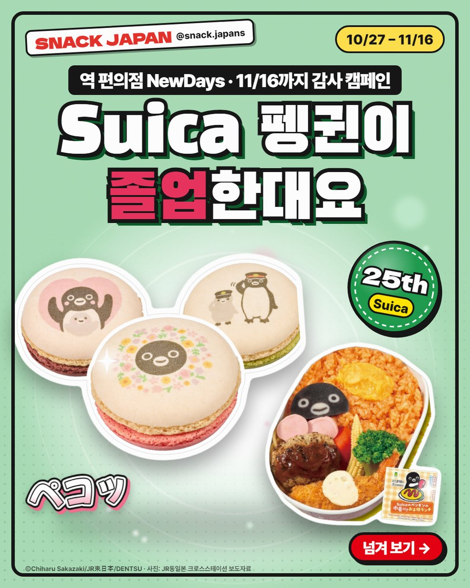
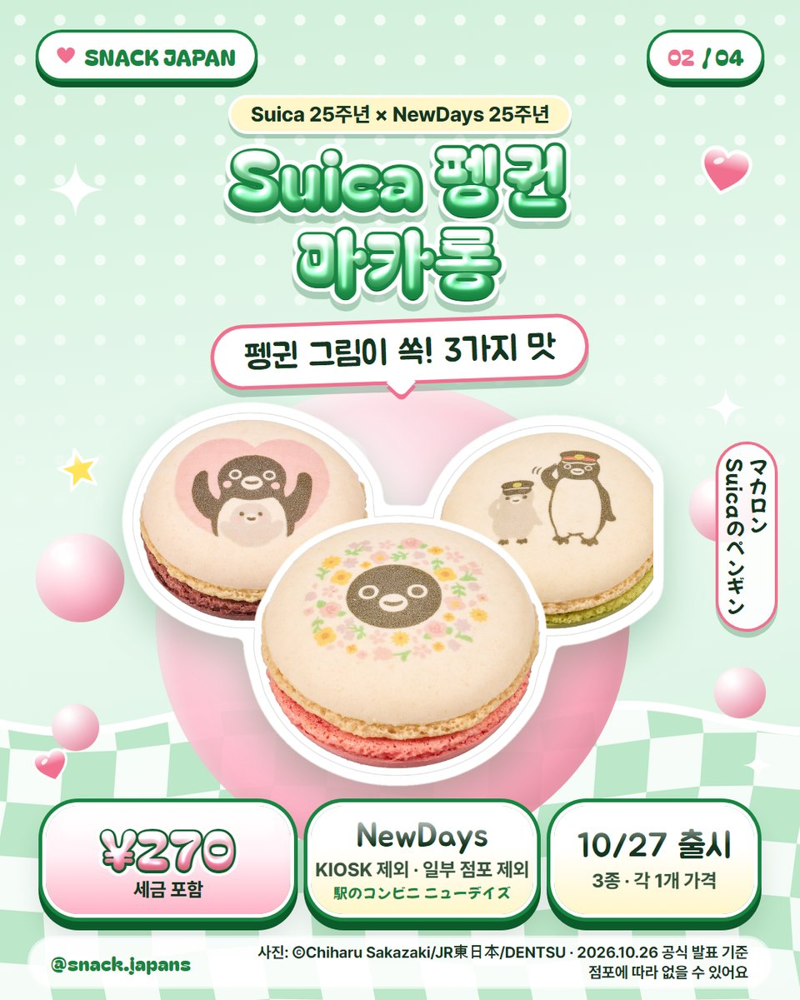
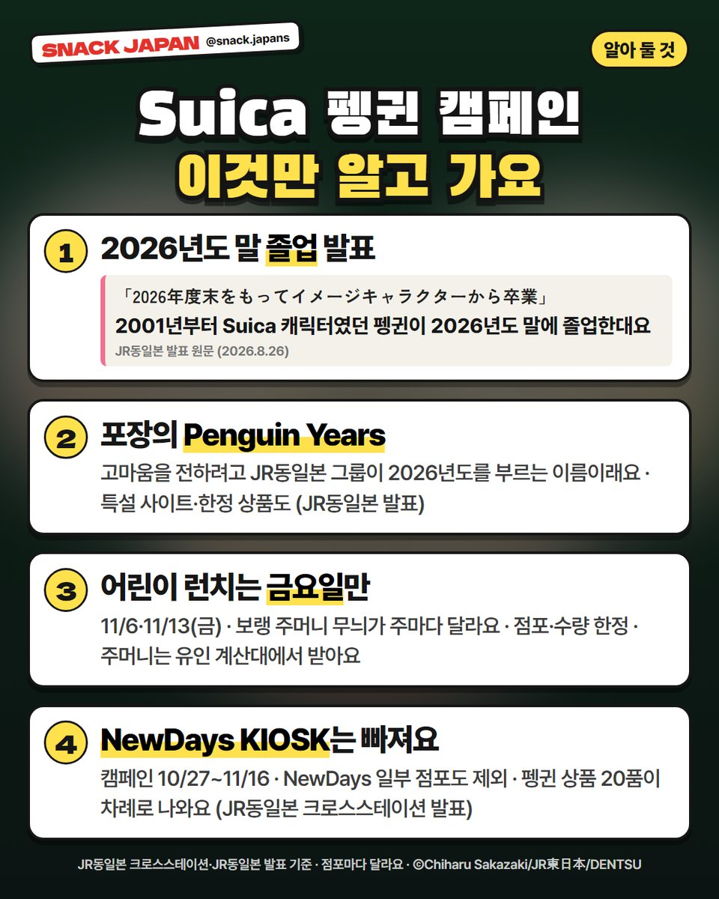
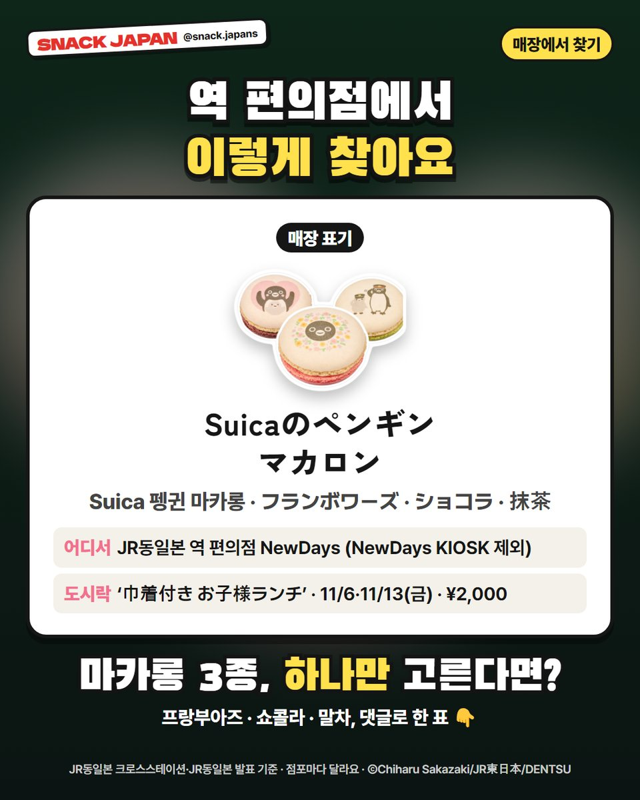

Suica 펭귄 졸업 발표, 일본 역 편의점 NewDays 펭귄 마카롱·어린이 런치 캠페인
일본 교통카드 Suica의 펭귄이 2026년도 말 졸업을 발표했어요! NewDays에서 11/16까지 열리는 펭귄 캠페인, 마카롱 3종과 금요일 한정 도시락을 정리했어요.
일본 교통카드 Suica의 펭귄이 졸업한대요 🐧
JR동일본이 2026년도 말에
'Suica의 펭귄'이 이미지 캐릭터에서 졸업한다고 발표했어요.
역 편의점 NewDays에선 11/16까지 고마움을 담은 펭귄 캠페인이 열려요.
JR동일본·JR동일본 크로스스테이션 발표 기준으로 정리해 볼게요.

1. Suica 펭귄이 졸업한대요
- 2001년부터 Suica 이미지 캐릭터였던 '스이카 펭귄'
- 2026년도 말에 이미지 캐릭터에서 졸업하고, 새 캐릭터에게 바통을 넘긴대요 (JR동일본 발표)
- JR동일본 그룹은 2026년도를 'Penguin Years'라고 부르면서 특설 사이트·한정 상품을 내고 있어요
- 이번 마카롱 포장에도 'Penguin Years'가 적혀 있어요
2. NewDays 'Suica 펭귄 캠페인'
- 기간: 10/27(화) ~ 11/16(월)
- 장소: JR동일본 역 편의점 NewDays (일부 점포 제외, NewDays KIOSK 제외)
- Suica 25주년 + NewDays 25주년 기념으로 펭귄 상품 20품이 차례로 나와요

3. 펭귄 마카롱 3종
NewDays 설명으로는 셋 다 펭귄 그림이 들어간 마카롱이에요.
- 프랑부아즈: 프랑부아즈 잼을 넣은 크림
- 쇼콜라: 초콜릿 맛 크림
- 말차: 말차를 넣은 크림
- 가격: 사진 카드에 정리해 뒀어요

4. 금요일에만 파는 어린이 런치
- 이름: Suicaのペンギンの巾着付き お子様ランチ
- 오므라이스·햄버그·새우튀김·스파게티에 펭귄이 좋아하는 어육 소시지까지 담았대요
- 남은 날: 11/6(금), 11/13(금)
- 보랭 주머니 무늬가 주마다 달라요
- 점포·수량 한정이고, 점포마다 판매 시작 시간이 다를 수 있어요
- 주머니는 유인 계산대에서 받아요 (셀프 계산이면 영수증을 직원에게 보여 주기)
- 파는 점포는 JR동일본 크로스스테이션 보도자료의 점포 목록에 있어요

5. 매장에서 찾는 법
- 매장 표기: Suicaのペンギンマカロン
- 맛 표기: フランボワーズ · ショコラ · 抹茶
- 점포에 따라 없는 상품도 있어요
총평
- 기준: JR동일본 크로스스테이션 보도자료(10/26)·JR동일본 보도자료(8/26), 10월 27일 확인
- 참고: 직접 먹어 보지 않아서 회사 설명만 옮겼어요
- 추천: 일본 여행에서 Suica 쓰는 분, 펭귄 굿즈 모으는 분
마카롱 3종, 하나만 고른다면?
댓글로 알려 주세요 🐧
사진: JR동일본 크로스스테이션 · ⒸChiharu Sakazaki/JR東日本/DENTSU